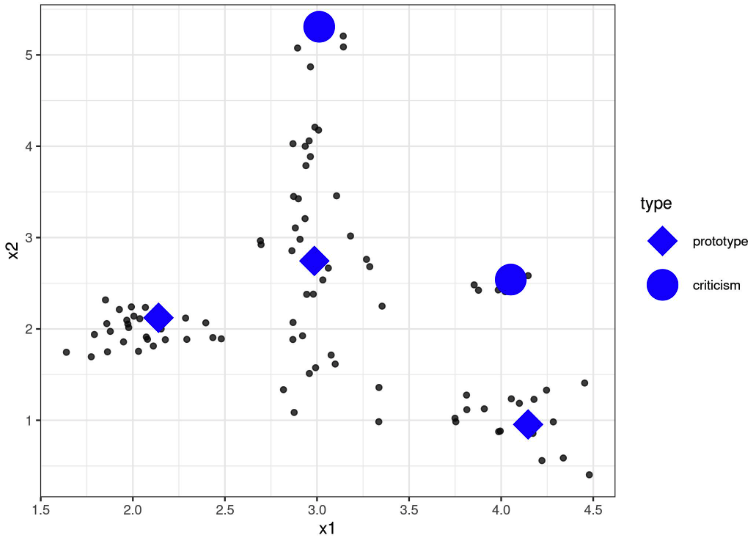
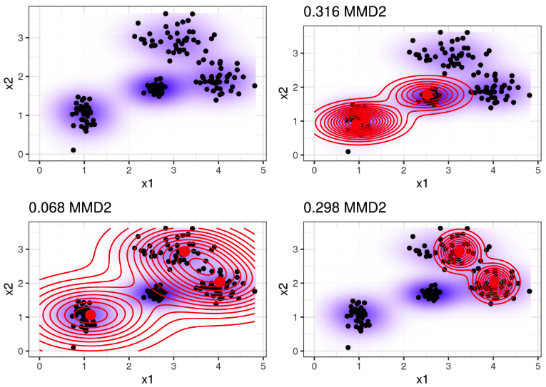
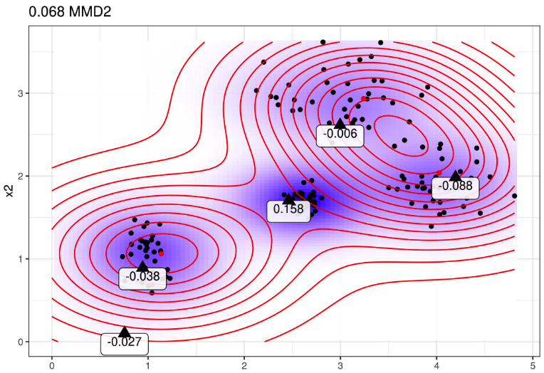
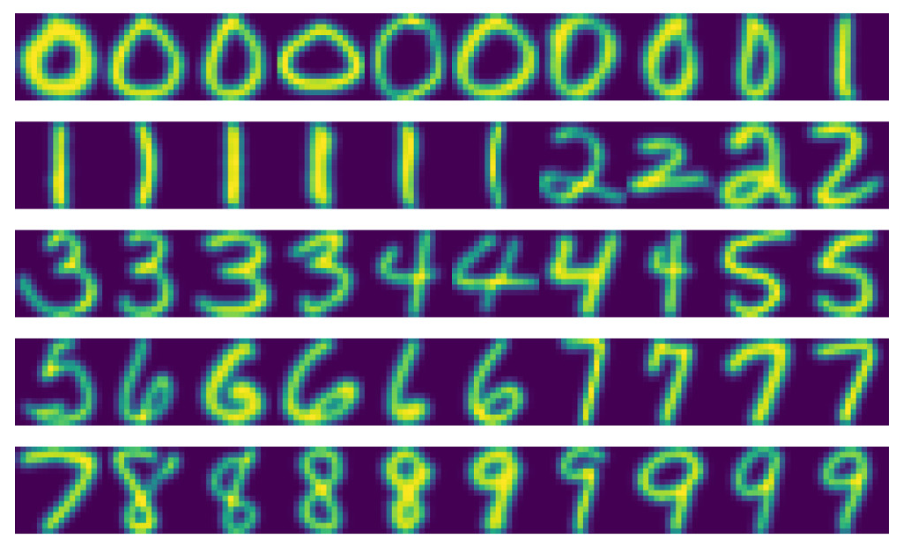

8.7 - Prototypes et critiques
Un prototype est une instance de données représentative de toutes les données. Une critique est une instance de données qui n’est pas bien représentée par l’ensemble des prototypes. Le but des critiques est de fournir des informations avec des prototypes, en particulier pour les points de données que les prototypes ne représentent pas bien. Les prototypes et les critiques peuvent être utilisés indépendamment d’un modèle d’apprentissage automatique pour décrire les données, mais ils peuvent également être utilisés pour créer un modèle interprétable ou pour rendre interprétable un modèle de boîte noire.
Dans ce chapitre, j’utilise l’expression “point de données” pour faire référence à une instance unique, afin de souligner l’interprétation selon laquelle une instance est également un point dans un système de coordonnées où chaque entité est une dimension. La figure suivante montre une distribution de données simulée, avec certaines instances choisies comme prototypes et d’autres comme critiques. Les petits points sont les données, les grands points les critiques et les grands carrés les prototypes. Les prototypes sont sélectionnés (manuellement) pour couvrir les centres de distribution des données et les critiques sont des points dans un cluster sans prototype. Les prototypes et les critiques sont toujours des instances réelles issues des données.

J’ai sélectionné les prototypes manuellement, ce qui ne s’adapte pas bien et conduit probablement à de mauvais résultats. Il existe de nombreuses approches pour trouver des prototypes dans les données. L’un d’eux est k-medoids, un algorithme de clustering lié à l’algorithme k-means. Tout algorithme de clustering qui renvoie des points de données réels en tant que centres de cluster serait éligible à la sélection de prototypes. Mais la plupart de ces méthodes ne trouvent que des prototypes, mais aucune critique. Ce chapitre présente le critique MMD de Kim et al. (2016)1, une approche qui combine prototypes et critiques dans un cadre unique.
MMD-critic compare la répartition des données et la répartition des prototypes sélectionnés. C’est le concept central pour comprendre la méthode critique MMD. MMD-critic sélectionne des prototypes qui minimisent l’écart entre les deux distributions. Les points de données situés dans des zones à forte densité constituent de bons prototypes, en particulier lorsque les points sont sélectionnés dans différents « groupes de données ». Les points de données provenant de régions qui ne sont pas bien expliqués par les prototypes sont sélectionnés comme critiques.
Approfondissons la théorie.
8.7.1 - Théorie
La procédure critique du MMD à un niveau élevé peut être résumée brièvement :
- Sélectionnez le nombre de prototypes et de critiques que vous souhaitez retrouver.
- Trouvez des prototypes avec une recherche gourmande. Les prototypes sont sélectionnés de manière à ce que la répartition des prototypes soit proche de la répartition des données.
- Trouvez des critiques grâce à une recherche gourmande. Les points sont sélectionnés comme critiques lorsque la répartition des prototypes diffère de la répartition des données.
Nous avons besoin de quelques ingrédients pour trouver des prototypes et des critiques pour un ensemble de données avec MMD-critique. En tant qu’ingrédient le plus élémentaire, nous avons besoin d’une fonction noyau pour estimer les densités de données. Un noyau est une fonction qui pondère deux points de données en fonction de leur proximité. Sur la base des estimations de densité, nous avons besoin d’une mesure qui nous indique à quel point deux distributions sont différentes afin de pouvoir déterminer si la distribution des prototypes que nous sélectionnons est proche de la distribution des données. Ceci est résolu en mesurant l’écart moyen maximum (MMD). Également basé sur la fonction noyau, nous avons besoin de la fonction témoin pour nous indiquer à quel point deux distributions sont différentes à un point de données particulier. Avec la fonction témoin, nous pouvons sélectionner des critiques, c’est-à-dire des points de données pour lesquels la répartition des prototypes et des données diverge et la fonction témoin prend de grandes valeurs absolues. Le dernier ingrédient est une stratégie de recherche de bons prototypes et de critiques, qui est résolue par une simple recherche gourmande.
Commençons par l’écart moyen maximum (MMD), qui mesure l’écart entre deux distributions. La sélection des prototypes crée une répartition de densité des prototypes. Nous voulons évaluer si la distribution des prototypes diffère de la distribution des données. Nous estimons les deux avec des fonctions de densité de noyau. L’écart moyen maximum mesure la différence entre deux distributions, qui est le supremum sur un espace fonctionnel des différences entre les attentes selon les deux distributions. Tout est clair? Personnellement, je comprends beaucoup mieux ces concepts quand je vois comment quelque chose est calculé avec des données. La formule suivante montre comment calculer la mesure MMD au carré (MMD2) :
\[MMD^2=\frac{1}{m^2}\sum_{i,j=1}^m{}k(z_i,z_j)-\frac{2}{mn}\sum_{i,j=1}^{m,n}k(z_i,x_j)+\frac{1}{n^2}\sum_{i,j=1}^n{}k(x_i,x_j)\]
\(k\) est une fonction noyau qui mesure la similarité de deux points, mais nous en reparlerons plus tard. \(m\) est le nombre de prototypes \(z\) et \(n\) est le nombre de points de données \(x\) dans notre ensemble de données d’origine. Les prototypes \(z\) sont une sélection de points de données \(x\). Chaque point est multidimensionnel, c’est-à-dire qu’il peut avoir plusieurs caractéristiques. Le but de MMD-critic est de minimiser MMD2. Plus MMD2 est proche de zéro, plus la distribution des prototypes s’adapte aux données. La clé pour ramener MMD2 à zéro est le terme au milieu, qui calcule la proximité moyenne entre les prototypes et tous les autres points de données (multipliée par 2). Si ce terme s’additionne au premier terme (la proximité moyenne des prototypes les uns par rapport aux autres) plus le dernier terme (la proximité moyenne des points de données les uns par rapport aux autres), alors les prototypes expliquent parfaitement les données. Essayez ce qui arriverait à la formule si vous utilisiez les \(n\) points de données comme prototypes.
Le graphique suivant illustre la mesure MMD2. Le premier graphique montre les points de données avec deux caractéristiques, l’estimation de la densité des données étant affichée sur un arrière-plan ombré. Chacune des autres parcelles montre différentes sélections de prototypes, ainsi que la mesure MMD2 dans les titres des parcelles. Les prototypes sont les gros points et leur répartition est représentée par des courbes de niveau. La sélection des prototypes qui couvrent le mieux les données dans ces scénarios (en bas à gauche) présente la valeur d’écart la plus faible.

Un choix pour le noyau est le noyau de fonction de base radiale : \[k(x,x^\prime) = exp\left(-\gamma\|x-x^\prime\|^2\right)\]
où \(\|x-x^\prime\|^2\) st la distance euclidienne entre deux points et \(\gamma\) est un paramètre de mise à l’échelle. La valeur du noyau décroît avec la distance entre les deux points et est comprise entre zéro et un : Zéro lorsque les deux points sont infiniment éloignés l’un de l’autre ; un lorsque les deux points sont égaux.
Nous combinons la mesure MMD2, la recherche noyau et glouton dans un algorithme de recherche de prototypes :
- Commencer avec une liste vide de prototypes.
- Alors que le nombre de prototypes est inférieur au nombre m choisi :
- Pour chaque point de l’ensemble de données, vérifiez de combien MMD2 est réduit lorsque le point est ajouté à la liste des prototypes. Ajoutez le point de données qui minimise le MMD2 à la liste.
- Renvoie la liste des prototypes.
Le dernier ingrédient permettant de formuler des critiques est la fonction témoin, qui nous indique dans quelle mesure deux estimations de densité diffèrent en un point particulier.
On peut l’estimer à l’aide de : \[witness(x) = \frac{1}{n} \sum_{i=1}^n k(x, x_i) - \frac{1}{m} \sum_{j=1}^m k(x, z_j)\]
Pour deux ensembles de données (avec les mêmes caractéristiques), la fonction témoin vous donne le moyen d’évaluer dans quelle distribution empirique le point \(x\) s’adapte le mieux. Pour trouver des critiques, nous recherchons des valeurs extrêmes de la fonction témoin dans les directions négative et positive. Le premier terme de la fonction témoin est la proximité moyenne entre le point \(x\) et les données, et respectivement le deuxième terme est la proximité moyenne entre le point \(x\) et les prototypes. Si la fonction témoin pour un point \(x\) est proche de zéro, la fonction de densité des données et des prototypes sont proches, ce qui signifie que la distribution des prototypes ressemble à la distribution des données au point \(x\). Une fonction témoin négative au point \(x\) signifie que la distribution du prototype surestime la distribution des données (par exemple si nous sélectionnons un prototype mais qu’il n’y a que quelques points de données à proximité); une fonction témoin positive au point \(x\) signifie que la distribution du prototype sous-estime la distribution des données (par exemple s’il y a de nombreux points de données autour de \(x\) mais que nous n’avons sélectionné aucun prototype à proximité).
Pour vous donner plus d’intuition, réutilisons les prototypes du tracé au préalable avec le MMD2 le plus bas et affichons la fonction témoin pour quelques points sélectionnés manuellement. Les étiquettes du tracé suivant montrent la valeur de la fonction témoin pour différents points marqués sous forme de triangles. Seul le point central a une valeur absolue élevée et constitue donc un bon candidat pour une critique.

La fonction témoin nous permet de rechercher explicitement des instances de données qui ne sont pas bien représentées par les prototypes. Les critiques sont des points à haute valeur absolue dans la fonction de témoin. Comme pour les prototypes, les critiques sont également trouvées grâce à des recherches gourmandes. Mais au lieu de réduire le MMD2 global, nous recherchons des points qui maximisent une fonction de coût incluant la fonction témoin et un terme régularisateur. Le terme supplémentaire dans la fonction d’optimisation impose la diversité des points, ce qui est nécessaire pour que les points proviennent de différents clusters.
Cette deuxième étape est indépendante de la manière dont les prototypes sont trouvés. J’aurais également pu sélectionner quelques prototypes et utiliser la procédure décrite ici pour apprendre les critiques. Ou bien les prototypes pourraient provenir de n’importe quelle procédure de clustering, comme les k-médoïdes.
Voilà pour les parties importantes de la théorie critique du MMD. Une question demeure : comment utiliser MMD-critic pour un apprentissage automatique interprétable ?
MMD-critic peut ajouter de l’interprétabilité de trois manières : en aidant à mieux comprendre la distribution des données ; en construisant un modèle interprétable ; en rendant interprétable un modèle de boîte noire.
Si vous appliquez MMD-critic à vos données pour trouver des prototypes et des critiques, cela améliorera votre compréhension des données, surtout si vous avez une distribution de données complexe avec des cas extrêmes. Mais avec MMD-critic, vous pouvez faire plus !
Par exemple, vous pouvez créer un modèle de prédiction interprétable : ce que l’on appelle le « modèle prototype le plus proche ». La fonction de prédiction est définie comme :
\[\hat{f}(x)=argmax_{i\in{}S}k(x,x_i)\]
ce qui signifie que nous sélectionnons le prototype \(i\) parmi l’ensemble de prototypes \(S\) le plus proche du nouveau point de données, dans le sens où il donne la valeur la plus élevée de la fonction noyau. Le prototype lui-même est renvoyé comme explication de la prédiction. Cette procédure comporte trois paramètres de réglage : le type de noyau, le paramètre de mise à l’échelle du noyau et le nombre de prototypes. Tous les paramètres peuvent être optimisés dans une boucle de validation croisée. Les critiques ne sont pas utilisées dans cette approche.
Comme troisième option, nous pouvons utiliser MMD-critic pour rendre n’importe quel modèle d’apprentissage automatique globalement explicable en examinant les prototypes et les critiques ainsi que leurs prédictions de modèle. La procédure est la suivante :
- Retrouvez des prototypes et des critiques avec MMD-critic.
- Entraînez un modèle d’apprentissage automatique comme d’habitude.
- Prédisez les résultats des prototypes et des critiques avec le modèle d’apprentissage automatique.
- Analysez les prédictions : dans quels cas l’algorithme s’est-il trompé ? Vous disposez désormais d’un certain nombre d’exemples qui représentent bien les données et vous aident à trouver les faiblesses du modèle d’apprentissage automatique.
Comment est-ce que ça aide ? Vous souvenez-vous de l’époque où le classificateur d’images de Google identifiait les Noirs comme des gorilles ? Peut-être auraient-ils dû utiliser la procédure décrite ici avant de déployer leur modèle de reconnaissance d’images. Il ne suffit pas de vérifier les performances du modèle, car si celui-ci était correct à \(99%\), ce problème pourrait encore se situer dans les \(1%\). Et les étiquettes peuvent aussi être fausses ! Passer en revue toutes les données d’entraînement et effectuer un contrôle d’intégrité si la prédiction est problématique aurait pu révéler le problème, mais serait irréalisable. Mais la sélection de – disons quelques milliers – de prototypes et de critiques est réalisable et aurait pu révéler un problème avec les données : elle aurait pu montrer qu’il y a un manque d’images de personnes à la peau foncée, ce qui indique un problème avec la diversité des individus. l’ensemble de données. Ou bien il aurait pu montrer une ou plusieurs images d’une personne à la peau foncée comme prototype ou (probablement) comme critique avec la fameuse classification de « gorille ». Je ne promets pas que les critiques de MMD intercepteraient certainement ce genre d’erreurs, mais c’est un bon test de bon sens.
8.7.2 - Exemples
L’exemple suivant de critique MMD utilise un ensemble de données de chiffres manuscrits.
En regardant les prototypes réels, vous remarquerez peut-être que le nombre d’images par chiffre est différent. En effet, un nombre fixe de prototypes ont été recherchés dans l’ensemble de données et non avec un nombre fixe par classe. Comme prévu, les prototypes montrent différentes manières d’écrire les chiffres.

8.7.3 - Avantages
Dans une étude utilisateur, les auteurs de MMD-critic ont donné des images aux participants, qu’ils ont dû faire correspondre visuellement à l’un des deux ensembles d’images, chacun représentant l’une des deux classes (par exemple deux races de chiens). Les participants ont obtenu de meilleurs résultats lorsque les décors montraient des prototypes et des critiques plutôt que des images aléatoires d’une classe.
Vous êtes libre de choisir le nombre de prototypes et de critiques.
MMD-critic fonctionne avec des estimations de densité des données. Cela fonctionne avec tout type de données et tout type de modèle d’apprentissage automatique.
L’algorithme est facile à mettre en oeuvre.
MMD-critic est très flexible dans la manière dont il est utilisé pour augmenter l’interprétabilité. Il peut être utilisé pour comprendre des distributions de données complexes. Il peut être utilisé pour créer un modèle d’apprentissage automatique interprétable. Ou encore, cela peut éclairer la prise de décision d’un modèle d’apprentissage automatique en boîte noire.
La recherche de critiques est indépendante du processus de sélection des prototypes. Mais il est logique de sélectionner les prototypes en fonction des critiques MMD, car les prototypes et les critiques sont alors créés en utilisant la même méthode de comparaison des prototypes et des densités de données.
8.7.4 - Inconvénients
Si, mathématiquement, les prototypes et les critiques sont définis différemment, leur distinction repose sur une valeur seuil (le nombre de prototypes). Supposons que vous choisissiez un nombre trop faible de prototypes pour couvrir la distribution des données. Les critiques aboutiraient dans des domaines qui ne sont pas très bien expliqués. Mais si vous deviez ajouter davantage de prototypes, ils se retrouveraient également dans les mêmes zones. Toute interprétation doit tenir compte du fait que les critiques dépendent fortement des prototypes existants et de la valeur seuil (arbitraire) du nombre de prototypes.
Il faut choisir le nombre de prototypes et de critiques. Même si cela peut être agréable, c’est aussi un inconvénient. De combien de prototypes et de critiques avons-nous réellement besoin ? Plus il y en a, mieux c’est ? Moins il y en a, mieux c’est ? Une solution consiste à sélectionner le nombre de prototypes et de critiques en mesurant le temps dont disposent les humains pour regarder les images, qui dépend de l’application particulière. Ce n’est qu’en utilisant MMD-critic pour créer un classificateur que nous avons un moyen de l’optimiser directement. Une solution pourrait être un scénario montrant le nombre de prototypes sur l’axe des x et la mesure MMD2 sur l’axe des y. Nous choisirions le nombre de prototypes où la courbe MMD2 s’aplatit.
Les autres paramètres sont le choix du noyau et le paramètre de mise à l’échelle du noyau. Nous avons le même problème qu’avec le nombre de prototypes et les critiques : comment sélectionner un noyau et son paramètre de mise à l’échelle ? Encore une fois, lorsque nous utilisons MMD-critic comme classificateur de prototype le plus proche, nous pouvons ajuster les paramètres du noyau. Cependant, pour les cas d’utilisation non supervisés de MMD-critique, ce n’est pas clair. (Peut-être que je suis un peu dur ici, puisque toutes les méthodes non supervisées ont ce problème.)
Il prend toutes les caractéristiques en entrée, sans tenir compte du fait que certaines caractéristiques pourraient ne pas être pertinentes pour prédire le résultat qui nous intéresse. Une solution consiste à utiliser uniquement les fonctionnalités pertinentes, par exemple les intégrations d’images au lieu des pixels bruts. Cela fonctionne tant que nous disposons d’un moyen de projeter l’instance d’origine sur une représentation qui ne contient que des informations pertinentes.
Il existe du code disponible, mais il n’est pas encore implémenté comme un logiciel bien emballé et documenté.
8.7.5 - Code et alternatives
Une implémentation de MMD-critic peut être trouvée dans le référentiel GitHub des auteurs.
Récemment une extension de MMD-critic a été développée : Protodash. Les auteurs revendiquent des avantages par rapport au critique MMD dans leur publication. Une implémentation Protodash est disponible dans l’ outil IBM AIX360.
L’alternative la plus simple à la recherche de prototypes est celle des k-médoïdes de Kaufman et al. (1987)2.